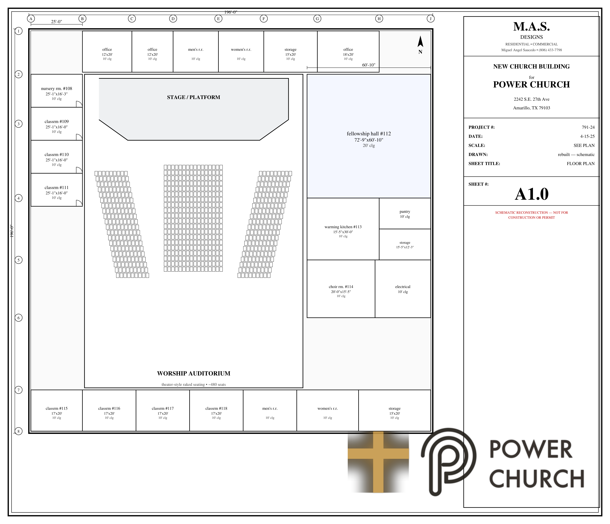
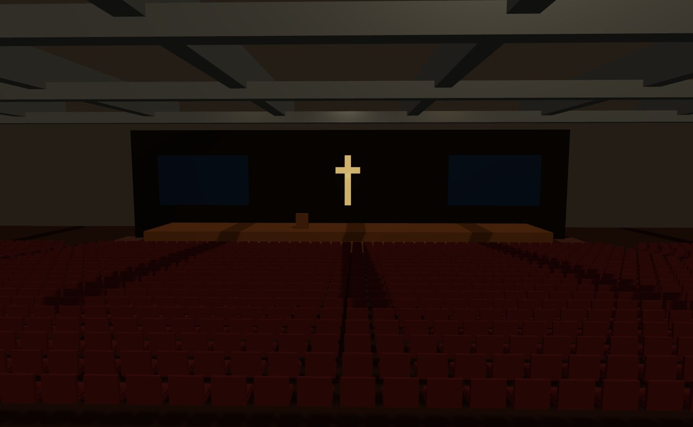
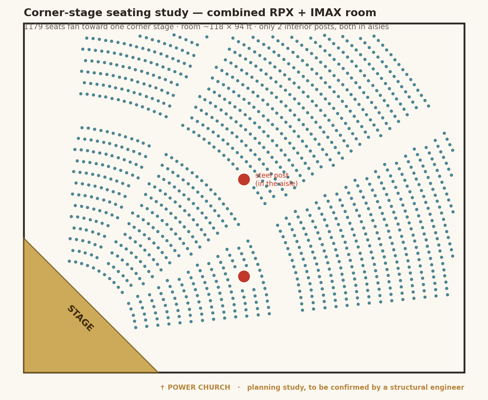

Every realistic path to a place we can gather 1,000–1,500 for worship — the cost, how each option wins, how each one loses, and where every number comes from. This is to inform the committee's decision, not to make it.
We need one room that seats 1,000–1,500 with a clear view to the stage from every seat. Beyond that, the committee is weighing cost, timeline, room to grow, and risk. The three realistic paths:
| Option | Money in | Worship room | Building | Time |
|---|---|---|---|---|
| 1 · Build new (metal building) | $4.7M–$6.8M all-in | Column-free by design | ~32,000 sf, new, to plan | ~6–9 mo |
| 2 · Buy & convert the theater | $5.3M–$10.3M | Needs column work | 83,422 sf existing + parking | Months (phased) |
| 3 · Master-lease the theater | ~$21K/mo + reno | Same as #2 | Same, but rented first | Fastest start |
On the numbers: the new-build figures are real contractor bids. The theater purchase is a real LOI price. The renovation and column-removal figures are planning-level estimates (labeled estimate) that a GC walk-through and a structural engineer convert to firm numbers. The new-build bids are turnkey (land included). All sources are listed at the bottom.
A pre-engineered metal building (PEMB) with rigid frames. The frames clear-span the width, so the worship room is column-free by design — the exact problem we fight in the theater simply does not exist here.

Convert the four center auditoriums into one sanctuary. The building already includes the structure, sprinklers, big HVAC, an elevator, and a huge parking lot. The catch is the 17 steel columns in the sanctuary — handling them is the swing:
| Column approach | Result | Added cost |
|---|---|---|
| A · aisles on the column lines | Posts stand in aisles, still in the room | ~$0 est |
| B · remove center + front posts | Clear view to the stage; posts remain at back/edges | $300K–$700K est |
| C · remove every post (clear span) | Fully open, column-free room | $1.2M–$3M est |

You don't have to combine four rooms or remove 17 posts to seat the church. The steel columns sit on the walls between rooms, so each big auditorium is already a clear, open room. Here is how a corner (diagonal) stage plays out:

What you're seeing: the two center rooms (RPX + IMAX) opened into one, with the stage in a corner and the seats fanned toward it. About 1,180 seats, and the only 2 interior posts both land in the aisles. A corner stage trades a few raw seats (a straight front-wall layout fits ~1,310 in the same room) for better sightlines and an intimate, everyone-facing-in feel. Want zero posts at all? A single auditorium with a corner stage seats roughly 800 with nothing to work around. Seat counts are planning estimates; a licensed structural engineer confirms the structure before anything is removed.
Same building and same conversion as Option 2, but we lease it (with an option to buy) instead of buying up front. The renovation still happens; ownership comes later at the option price.
From the committee pro forma — these layer onto the theater options (and partly onto new build):
| Structure | Shape | Best when |
|---|---|---|
| A · Seller carry + construction loan | $2M seller carryback (IO, balloon) + $2M bank construction loan | Cleanest exit math; seller is willing to carry |
| B · Bank term loan + fundraise | $4M term loan, raise reno during | Simple to explain, but highest risk per the pro forma |
| C · Master lease + buyout | Lease, then refi to buy at $3.8M | Operationally safest; hardest refi exit |
Banker on file: Amarillo National Bank. Texas Tax Code 11.20 exempts 501(c)(3) religious property from property tax if the church entity owns it (not a for-profit LLC) — a real annual savings worth confirming with the structure.
| Build new (PEMB) | Buy + convert | Master-lease | |
|---|---|---|---|
| Cash to a working sanctuary | $4.7–6.8M (land in) | $5.3–10.3M | ~$21K/mo + reno |
| Column-free worship room | Yes, by design | $0.3–3M to solve | $0.3–3M to solve |
| Square footage | ~32,000 | 83,422 | 83,422 |
| Room to grow / extra space | Limited | ~45,000 sf spare | ~45,000 sf spare |
| Parking / site | Build it | Included | Included |
| Condition / risk | New, lowest | Old, retrofit risk | Old, + leasing risk |
| Walk-away flexibility | Low (own it) | Low (own it) | High |
| Time to worship in it | ~6–9 mo | Months (phased) | Fastest |
No option is the obvious winner on every line — that's the committee's call. The shortest summary: new build gives the cleanest, lowest-risk open room for the money; convert gives far more building and included land at the price of the column work and retrofit risk; master-lease trades equity for flexibility and the lowest entry.
Every figure above traces to one of these. Estimates are labeled as estimates.
| Figure | Source |
|---|---|
| New build $4.697M (JOMA), $4.98–5.85M target, $6.807M (Caprock), $147–215/sf; 32,000 sf PEMB, land included | Power Church Construction Pricing Research, Apr 9 2026 (real contractor bids) |
| Theater $3.8M buy (LOI), $5.5M list, 83,422 sf, vacant 2.5 yr; financing A/B/C; master-lease $3/sf; ANB; tax exemption | Three-Scenario Pro Forma, Building Committee, May 4 2026 |
| Theater condition: 47 recommendations, 2 safety (major foundation crack, electrical clearance); sprinklers/HVAC/elevator present | A Better Inspection (CCPIA), M. Morton, Certified Master Inspector, May 19 2026 |
| 14 auditoriums, 3,110 seats (108 IMAX 448, 107 RPX 448…); 17 tube-steel columns, ~30 ft grid; ~12,100 sf combined sanctuary → ~1,850 church seats | Original Amarillo Star construction CAD (7033 set, COL-TS-C columns), read via LibreDWG / ezdxf |
| New church floor plan (image) | M.A.S. Designs (Miguel A. Saucedo), Sheet A1.0, Project 791-24 |
| Fit-out $1.5–3.5M; column options A $0 / B $300–700K / C $1.2–3M | Planning-level estimates (Class 5, −30%/+50%) — to be firmed by a GC walk-through + structural engineer |